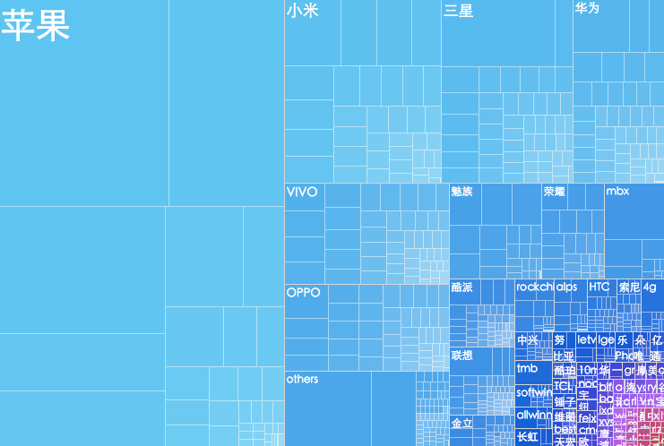
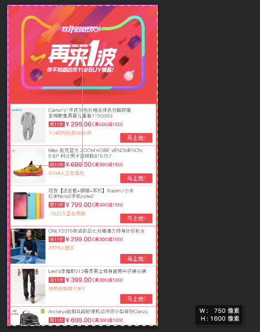

使用Flexible实现手淘H5页面的终端适配¶
曾几何时为了兼容IE低版本浏览器而头痛，以为到Mobile时代可以跟这些麻烦说拜拜。可没想到到了移动时代，为了处理各终端的适配而乱了手脚。对于混迹各社区的偶，时常发现大家拿手机淘宝的H5页面做讨论——手淘的H5页面是如何实现多终端的适配？
那么趁此**Amfe阿里无线前端团队双11技术连载**之际，用一个实战案例来告诉大家，手淘的H5页面是如何实现多终端适配的，希望这篇文章对大家在Mobile的世界中能过得更轻松。
目标¶
拿一个双11的Mobile页面来做案例，比如你实现一个类似下图的一个H5页面：
目标很清晰，就是做一个这样的H5页面。
DEMO¶
请用手机扫下面的二维码

痛点¶
虽然H5的页面与PC的Web页面相比简单了不少，但让我们头痛的事情是要想尽办法让页面能适配众多不同的终端设备。看看下图你就会知道，这是多么痛苦的一件事情：
点击这里查看更多终端设备的参数。
再来看看手淘H5要适配的终端设备数据：

看到这些数据，是否死的心都有了，或者说为此捏了一把汗出来。
手淘团队适配协作模式¶
早期移动端开发，对于终端设备适配问题只属于Android系列，只不过很多设计师常常忽略Android适配问题，只出一套iOS平台设计稿。但随着iPhone6，iPhone6+的出现，从此终端适配问题不再是Android系列了，也从这个时候让移动端适配全面进入到“杂屏”时代。

上图来自于paintcodeapp.com
为了应对这多么的终端设备，设计师和前端开发之间又应该采用什么协作模式？或许大家对此也非常感兴趣。
而整个手淘设计师和前端开发的适配协作基本思路是：
- 选择一种尺寸作为设计和开发基准
- 定义一套适配规则，自动适配剩下的两种尺寸(其实不仅这两种，你懂的)
- 特殊适配效果给出设计效果
还是上一张图吧，因为一图胜过千言万语：

在此也不做更多的阐述。在手淘的设计师和前端开发协作过程中：手淘设计师常选择iPhone6作为基准设计尺寸，交付给前端的设计尺寸是按750px \* 1334px为准(高度会随着内容多少而改变)。前端开发人员通过一套适配规则自动适配到其他的尺寸。
根据上面所说的，设计师给我们的设计图是一个750px * 1600px的页面：

前端开发完成终端适配方案¶
拿到设计师给的设计图之后，剩下的事情是前端开发人员的事了。而手淘经过多年的摸索和实战，总结了一套移动端适配的方案——flexible方案。
这种方案具体在实际开发中如何使用，暂时先卖个关子，在继续详细的开发实施之前，我们要先了解一些基本概念。
一些基本概念¶
在进行具体实战之前，首先得了解下面这些基本概念(术语)：
视窗 viewport¶
简单的理解，viewport是严格等于浏览器的窗口。在桌面浏览器中，viewport就是浏览器窗口的宽度高度。但在移动端设备上就有点复杂。
移动端的viewport太窄，为了能更好为CSS布局服务，所以提供了两个viewport:虚拟的viewportvisualviewport和布局的viewportlayoutviewport。
George Cummins在Stack Overflow上对这两个基本概念做了详细的解释。
而事实上viewport是一个很复杂的知识点，上面的简单描述可能无法帮助你更好的理解viewport，而你又想对此做更深的了解，可以阅读PPK写的相关教程。
物理像素(physical pixel)¶
物理像素又被称为设备像素，他是显示设备中一个最微小的物理部件。每个像素可以根据操作系统设置自己的颜色和亮度。正是这些设备像素的微小距离欺骗了我们肉眼看到的图像效果。

设备独立像素(density-independent pixel)¶
设备独立像素也称为密度无关像素，可以认为是计算机坐标系统中的一个点，这个点代表一个可以由程序使用的虚拟像素(比如说CSS像素)，然后由相关系统转换为物理像素。
CSS像素¶
CSS像素是一个抽像的单位，主要使用在浏览器上，用来精确度量Web页面上的内容。一般情况之下，CSS像素称为与设备无关的像素(device-independent pixel)，简称DIPs。
屏幕密度¶
屏幕密度是指一个设备表面上存在的像素数量，它通常以每英寸有多少像素来计算(PPI)。
设备像素比(device pixel ratio)¶
设备像素比简称为dpr，其定义了物理像素和设备独立像素的对应关系。它的值可以按下面的公式计算得到：
设备像素比 ＝ 物理像素 / 设备独立像素
在JavaScript中，可以通过window.devicePixelRatio获取到当前设备的dpr。而在CSS中，可以通过-webkit-device-pixel-ratio，-webkit-min-device-pixel-ratio和 -webkit-max-device-pixel-ratio进行媒体查询，对不同dpr的设备，做一些样式适配(这里只针对webkit内核的浏览器和webview)。
dip或dp,（device independent pixels，设备独立像素）与屏幕密度有关。dip可以用来辅助区分视网膜设备还是非视网膜设备。
缩合上述的几个概念，用一张图来解释：

众所周知，iPhone6的设备宽度和高度为375pt * 667pt,可以理解为设备的独立像素；而其dpr为2，根据上面公式，我们可以很轻松得知其物理像素为750pt * 1334pt。
如下图所示，某元素的CSS样式：
width: 2px;
height: 2px；
在不同的屏幕上，CSS像素所呈现的物理尺寸是一致的，而不同的是CSS像素所对应的物理像素具数是不一致的。在普通屏幕下1个CSS像素对应1个物理像素，而在Retina屏幕下，1个CSS像素对应的却是4个物理像素。
有关于更多的介绍可以点击这里详细了解。
看到这里，你能感觉到，在移动端时代屏幕适配除了Layout之外，还要考虑到图片的适配，因为其直接影响到页面显示质量，对于如何实现图片适配，再此不做过多详细阐述。这里盗用了@南宮瑞揚根据mir.aculo.us翻译的一张信息图：

meta标签¶
<meta>标签有很多种，而这里要着重说的是viewport的meta标签，其主要用来告诉浏览器如何规范的渲染Web页面，而你则需要告诉它视窗有多大。在开发移动端页面，我们需要设置meta标签如下：
<meta name="viewport" content="width=device-width, initial-scale=1, maximum-scale=1">
代码以显示网页的屏幕宽度定义了视窗宽度。网页的比例和最大比例被设置为100%。
留个悬念，因为后面的解决方案中需要重度依赖meta标签。
CSS单位rem¶
在W3C规范中是这样描述rem的:
font size of the root element.
简单的理解，rem就是相对于根元素的`font-size`来做计算。而我们的方案中使用`rem`单位，是能轻易的根据的font-size计算出元素的盒模型大小。而这个特色对我们来说是特别的有益处。
前端实现方案¶
了解了前面一些相关概念之后，接下来我们来看实际解决方案。在整个手淘团队，我们有一个名叫lib-flexible的库，而这个库就是用来解决H5页面终端适配的。
lib-flexible是什么？¶
lib-flexible是一个制作H5适配的开源库，可以点击这里下载相关文件，获取需要的JavaScript和CSS文件。
当然你可以直接使用阿里CDN：
<script src="http://g.tbcdn.cn/mtb/lib-flexible/{{version}}/??flexible_css.js,flexible.js"></script>
将代码中的{{version}}换成对应的版本号0.3.4。
使用方法¶
lib-flexible库的使用方法非常的简单，只需要在Web页面的`中添加对应的flexible_css.js,flexible.js`文件：
第一种方法是将文件下载到你的项目中，然后通过相对路径添加:
<script src="build/flexible_css.debug.js"></script>
<script src="build/flexible.debug.js"></script>
或者直接加载阿里CDN的文件：
<script src="http://g.tbcdn.cn/mtb/lib-flexible/0.3.4/??flexible_css.js,flexible.js"></script>
另外强烈建议对JS做**内联处理**，在所有资源加载之前执行这个JS。执行这个JS后，会在`元素上增加一个data-dpr属性，以及一个font-size样式。JS会根据不同的设备添加不同的data-dpr值，比如说2或者3，同时会给html加上对应的font-size的值，比如说75px`。
如此一来，页面中的元素，都可以通过rem单位来设置。他们会根据html元素的font-size值做相应的计算，从而实现屏幕的适配效果。
除此之外，在引入lib-flexible需要执行的JS之前，可以手动设置meta来控制dpr值，如：
<meta name="flexible" content="initial-dpr=2" />
其中initial-dpr会把dpr强制设置为给定的值。如果手动设置了dpr之后，不管设备是多少的dpr，都会强制认为其dpr是你设置的值。在此不建议手动强制设置dpr，因为在Flexible中，只对iOS设备进行dpr的判断，对于Android系列，始终认为其dpr为1。
if (!dpr && !scale) {
var isAndroid = win.navigator.appVersion.match(/android/gi);
var isIPhone = win.navigator.appVersion.match(/iphone/gi);
var devicePixelRatio = win.devicePixelRatio;
if (isIPhone) {
// iOS下，对于2和3的屏，用2倍的方案，其余的用1倍方案
if (devicePixelRatio >= 3 && (!dpr || dpr >= 3)) {
dpr = 3;
} else if (devicePixelRatio >= 2 && (!dpr || dpr >= 2)){
dpr = 2;
} else {
dpr = 1;
}
} else {
// 其他设备下，仍旧使用1倍的方案
dpr = 1;
}
scale = 1 / dpr;
}
flexible的实质¶
flexible实际上就是能过JS来动态改写meta标签，代码类似这样：
var metaEl = doc.createElement('meta');
var scale = isRetina ? 0.5:1;
metaEl.setAttribute('name', 'viewport');
metaEl.setAttribute('content', 'initial-scale=' + scale + ', maximum-scale=' + scale + ', minimum-scale=' + scale + ', user-scalable=no');
if (docEl.firstElementChild) {
document.documentElement.firstElementChild.appendChild(metaEl);
} else {
var wrap = doc.createElement('div');
wrap.appendChild(metaEl);
documen.write(wrap.innerHTML);
}
事实上他做了这几样事情：
- 动态改写``标签
- 给
`元素添加data-dpr属性，并且动态改写data-dpr`的值 - 给
`元素添加font-size属性，并且动态改写font-size`的值
案例实战¶
了解Flexible相关的知识之后，咱们回到文章开头。我们的目标是制作一个适配各终端的H5页面。别的不多说，动手才能丰衣足食。
创建HTML模板¶
<!DOCTYPE html>
<html lang="en">
<head>
<meta charset="utf-8">
<meta content="yes" name="apple-mobile-web-app-capable">
<meta content="yes" name="apple-touch-fullscreen">
<meta content="telephone=no,email=no" name="format-detection">
<script src="http://g.tbcdn.cn/mtb/lib-flexible/0.3.4/??flexible_css.js,flexible.js"></script>
<link rel="apple-touch-icon" href="favicon.png">
<link rel="Shortcut Icon" href="favicon.png" type="image/x-icon">
<title>再来一波</title>
</head>
<body>
<!-- 页面结构写在这里 -->
</body>
</html>
正如前面所介绍的一样，首先加载了Flexible所需的配置：
<script src="http://g.tbcdn.cn/mtb/lib-flexible/0.3.4/??flexible_css.js,flexible.js"></script>
这个时候可以根据设计的图需求，在HTML文档的``中添加对应的HTML结构，比如：
<div class="item-section" data-repeat="sections">
<div class="item-section_header">
<h2><img src="{brannerImag}" alt=""></h2>
</div>
<ul>
<li data-repeat="items" class="flag" role="link" href="{itemLink}">
<a class="figure flag-item" href="{itemLink}">
<img src="{imgSrc}" alt="">
</a>
<div class="figcaption flag-item">
<div class="flag-title"><a href="{itemLink}" title="">{poductName}</a></div>
<div class="flag-price"><span>双11价</span><strong>¥{price}</strong><small>({preferential})</small></div>
<div class="flag-type">{activityType}</div>
<a class="flag-btn" href="{shopLink}">{activeName}</a>
</div>
</li>
</ul>
</div>
这仅是一个示例文档，大家可以根据自己风格写模板。
为了能更好的测试页面，给其配置一点假数据：
//define data
var pageData = {
sections:[{
"brannerImag":"http://xxx.cdn.com/B1PNLZKXXXXXaTXXXXXXXXXXXX-750-481.jpg",
items:[{
"itemLink": "##",
"imgSrc": "https://placeimg.com/350/350/people/grayscale",
"poductName":"Carter's1年式灰色长袖连体衣包脚爬服全棉鲸鱼男婴儿童装115G093",
"price": "299.06",
"preferential": "满400减100",
"activityType": "1小时内热卖5885件",
"shopLink":"##",
"activeName": "马上抢！"
}
....
}]
}]
}
接下来的工作就是美化工作了。在写具体样式之前，有几个点需要先了解一下。
把视觉稿中的px转换成rem¶
读到这里，大家应该都知道，我们接下来要做的事情，就是如何把视觉稿中的px转换成rem。在此花点时间解释一下。
首先，目前日常工作当中，视觉设计师给到前端开发人员手中的视觉稿尺寸一般是基于640px、750px以及1125px宽度为准。甚至为什么？大家应该懂的（考虑Retina屏）。
正如文章开头显示的示例设计稿，他就是一张以750px为基础设计的。那么问题来了，我们如何将设计稿中的各元素的px转换成rem。

我厂的视觉设计师想得还是很周到的，会帮你把相关的信息在视觉稿上标注出来。
目前Flexible会将视觉稿分成**100份**（主要为了以后能更好的兼容vh和vw），而每一份被称为一个单位a。同时1rem单位被认定为10a。针对我们这份视觉稿可以计算出：
1a = 7.5px
1rem = 75px
那么我们这个示例的稿子就分成了10a，也就是整个宽度为10rem，`对应的font-size为75px`：

这样一来，对于视觉稿上的元素尺寸换算，只需要原始的px值除以rem基准值即可。例如此例视觉稿中的图片，其尺寸是176px * 176px,转换成为2.346667rem * 2.346667rem。
如何快速计算¶
在实际生产当中，如果每一次计算px转换rem，或许会觉得非常麻烦，或许直接影响大家平时的开发效率。为了能让大家更快进行转换，我们团队内的同学各施所长，为px转换rem写了各式各样的小工具。
CSSREM¶
CSSREM是一个CSS的px值转rem值的Sublime Text3自动完成插件。这个插件是由@正霖编写。先来看看插件的效果：

有关于CSSREM如何安装、配置教程可以点击这里查阅。
CSS处理器¶
除了使用编辑器的插件之外，还可以使用CSS的处理器来帮助大家处理。比如说Sass、LESS以及PostCSS这样的处理器。我们简单来看两个示例。
Sass¶
使用Sass的同学，可以使用Sass的函数、混合宏这些功能来实现：
@function px2em($px, $base-font-size: 16px) {
@if (unitless($px)) {
@warn "Assuming #{$px} to be in pixels, attempting to convert it into pixels for you";
@return px2em($px + 0px); // That may fail.
} @else if (unit($px) == em) {
@return $px;
}
@return ($px / $base-font-size) * 1em;
}
除了使用Sass函数外，还可以使用Sass的混合宏：
@mixin px2rem($property,$px-values,$baseline-px:16px,$support-for-ie:false){
//Conver the baseline into rems
$baseline-rem: $baseline-px / 1rem * 1;
//Print the first line in pixel values
@if $support-for-ie {
#{$property}: $px-values;
}
//if there is only one (numeric) value, return the property/value line for it.
@if type-of($px-values) == "number"{
#{$property}: $px-values / $baseline-rem;
}
@else {
//Create an empty list that we can dump values into
$rem-values:();
@each $value in $px-values{
// If the value is zero or not a number, return it
@if $value == 0 or type-of($value) != "number"{
$rem-values: append($rem-values, $value / $baseline-rem);
}
}
// Return the property and its list of converted values
#{$property}: $rem-values;
}
}
有关于更多的介绍，可以点击这里进行了解。
PostCSS(px2rem)¶
除了Sass这样的CSS处理器这外，我们团队的@颂奇同学还开发了一款npm的工具px2rem。安装好px2rem之后，可以在项目中直接使用。也可以使用PostCSS。使用PostCSS插件postcss-px2rem：
var gulp = require('gulp');
var postcss = require('gulp-postcss');
var px2rem = require('postcss-px2rem');
gulp.task('default', function() {
var processors = [px2rem({remUnit: 75})];
return gulp.src('./src/*.css')
.pipe(postcss(processors))
.pipe(gulp.dest('./dest'));
});
除了在Gulp中配置外，还可以使用其他的配置方式，详细的介绍可以点击这里进行了解。
配置完成之后，在实际使用时，你只要像下面这样使用：
.selector {
width: 150px;
height: 64px; /*px*/
font-size: 28px; /*px*/
border: 1px solid #ddd; /*no*/
}
px2rem处理之后将会变成：
.selector {
width: 2rem;
border: 1px solid #ddd;
}
[data-dpr="1"] .selector {
height: 32px;
font-size: 14px;
}
[data-dpr="2"] .selector {
height: 64px;
font-size: 28px;
}
[data-dpr="3"] .selector {
height: 96px;
font-size: 42px;
}
在整个开发中有了这些工具之后，完全不用担心px值转rem值影响开发效率。
文本字号不建议使用rem¶
前面大家都见证了如何使用rem来完成H5适配。那么文本又将如何处理适配。是不是也通过rem来做自动适配。
显然，我们在iPhone3G和iPhone4的Retina屏下面，希望看到的文本字号是相同的。也就是说，我们**不希望文本在Retina屏幕下变小**，另外，我们**希望在大屏手机上看到更多文本**，以及，现在绝大多数的字体文件都自带一些点阵尺寸，通常是16px和24px，所以我们**不希望出现13px和15px这样的奇葩尺寸**。
如此一来，就决定了在制作H5的页面中，rem并不适合用到段落文本上。所以在Flexible整个适配方案中，考虑文本还是使用px作为单位。只不过使用[data-dpr]属性来区分不同dpr下的文本字号大小。
div {
width: 1rem;
height: 0.4rem;
font-size: 12px; // 默认写上dpr为1的fontSize
}
[data-dpr="2"] div {
font-size: 24px;
}
[data-dpr="3"] div {
font-size: 36px;
}
为了能更好的利于开发，在实际开发中，我们可以定制一个font-dpr()这样的Sass混合宏：
@mixin font-dpr($font-size){
font-size: $font-size;
[data-dpr="2"] & {
font-size: $font-size * 2;
}
[data-dpr="3"] & {
font-size: $font-size * 3;
}
}
有了这样的混合宏之后，在开发中可以直接这样使用：
@include font-dpr(16px);
当然这只是针对于描述性的文本，比如说段落文本。但有的时候文本的字号也需要分场景的，比如在项目中有一个slogan,业务方希望这个slogan能根据不同的终端适配。针对这样的场景，完全可以使用rem给slogan做计量单位。
CSS¶
本来想把这个页面的用到的CSS(或SCSS)贴出来，但考虑篇幅过长，而且这么简单的页面，我想大家也能轻而易举搞定。所以就省略了。权当是给大家留的一个作业吧，感兴趣的可以试试Flexible能否帮你快速完成H5页面终端适配。
效果¶
最后来看看真机上显示的效果吧。我截了两种设备下的效果：
iPhone4¶
[
iPhone6+¶
[

总结¶
其实H5适配的方案有很多种，网上有关于这方面的教程也非常的多。不管哪种方法，都有其自己的优势和劣势。而本文主要介绍的是如何使用Flexible这样的一库来完成H5页面的终端适配。为什么推荐使用Flexible库来做H5页面的终端设备适配呢？主要因为这个库在手淘已经使用了近一年，而且已达到了较为稳定的状态。除此之外，你不需要考虑如何对元素进行折算，可以根据对应的视觉稿，直接切入。